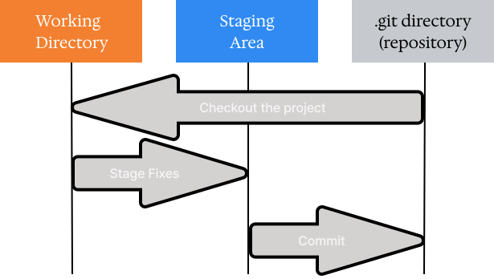

Overview#
This section descirbes some aspects of working in Git.
Git is a distributed version control system, which means it stores all information in multiple places. There are typically two types of hosts where a Git repository can be stored:
A git hosting some service or server that stores project.
A developer’s computer. The entire porject history is stored on each developer’s computer. If needed, they can upload local changes to the hosting server or download changes contributed by other developers.
This is an entry page containing basic information you need to know to start working with git. Some sections refer to specific pages that provide more detailed descriptions of various git concepts with more advanced examples.
Repository#
This section discusses what a git repository is and what a typical folder needs to have to be considered a git repository.
You should use the git init command to create a new repository. This command adds a .git folder to the directory being initialized as a repository - this folder serves as a marker indicating that the directory is a git repository.
The following cell creates a folder and initializes a repository in it. This allows you to see the typical messages provided by git during these operations.
mkdir /tmp/git_init
cd /tmp/git_init
git init
hint: Using 'master' as the name for the initial branch. This default branch name
hint: is subject to change. To configure the initial branch name to use in all
hint: of your new repositories, which will suppress this warning, call:
hint:
hint: git config --global init.defaultBranch <name>
hint:
hint: Names commonly chosen instead of 'master' are 'main', 'trunk' and
hint: 'development'. The just-created branch can be renamed via this command:
hint:
hint: git branch -m <name>
Initialized empty Git repository in /tmp/git_init/.git/
Check what the empty folder looks like after running git init.
ls -la
total 20
drwxrwxr-x 3 fedor fedor 4096 Jan 8 18:47 .
drwxrwxrwt 43 root root 12288 Jan 8 18:50 ..
drwxrwxr-x 7 fedor fedor 4096 Jan 8 18:47 .git
There is a .git folder which contains all the files that git uses to keep track of changes.
Git kernel#
This section typically uses a specially created jupyter git kernel. This automatically creates a git repo each time you run a cell with %init magic in the first line. Therefore, you can just start witht the git commands avoiding, the boilerplate code to manage the repo.
Stages#
Files in git can take three stages:
Modified: means that the file in the working directory has been modified, but these changes aren’t tracked by Git.Staged: means that you marked the current version of the file to be commited.Commited: means that this version of the file is stored in the local database in the.gitfolder.
The following picture is an adoptation of popular approach to visualise the stages of the stages in git:

Check more in Stages page.
Configuration#
Use the git config command to work with configurations from the command line.
There are three levels of configuration for the git repository. Each level keeps its configuration in the corresponding file and has a corresponding flag for the git config command. The following cell maps each configuration level in git:
Level |
Configuration file |
|
|---|---|---|
System: for all users of the system |
|
|
Global: for the user |
|
|
Local: for the repository |
|
|
For more check the Configuration page.
Status#
The git status command prints the status of the repository.
To get more compact output use -s (--short) option, so the result will be just files with corresponding markers:
The first symbol in the marker indicates how a file got into staged area.
The second symbol in the marker indicates if a file modified in unstaged area.
The
Untracked filefill be denoted with??marker.
The following cell creates the, files that have different stages.
%init
echo "initial" > modified
echo "initial" > modified_staged
echo "initial" > modified_staged_modified
git add modified modified_staged modified_staged_modified
git commit -m "add modified" &> /dev/null
echo "initial" > staged_file
git add staged_file &> /dev/null
echo "initial" > new_file
echo "new" >> modified
echo "new" >> modified_staged
git add modified_staged
echo "initial" > new_staged_modified
git add new_staged_modified
echo "new" >> new_staged_modified
echo "new" >> modified_staged_modified
git add modified_staged_modified
echo "new" >> modified_staged_modified
The git status output for such repo is represented in the following cell:
git status
On branch master
Changes to be committed:
(use "git restore --staged <file>..." to unstage)
modified: modified_staged
modified: modified_staged_modified
new file: new_staged_modified
new file: staged_file
Changes not staged for commit:
(use "git add <file>..." to update what will be committed)
(use "git restore <file>..." to discard changes in working directory)
modified: modified
modified: modified_staged_modified
modified: new_staged_modified
Untracked files:
(use "git add <file>..." to include in what will be committed)
new_file
While most output is easy to understand, but consider some tricky cases:
modified_staged_modified: the case when a file has both staged and unstaged changes, so it appars in both “Changes to be commited” and “Changes not staged for commit”.new_staged_modified: the close to previous case but file was staged as new file and modified, therefore in “Changes to be commited” it appears as a “new file”.
The corresponding short output is in the following cell:
git status -s
M modified
M modified_staged
MM modified_staged_modified
AM new_staged_modified
A staged_file
?? new_file
Ignore#
Specify the files you want git to ignore in the .gitignore file. There are several features important to know about git ignore:
You can specify the patterns in regex-like style.
You can specify the
.gitignorefile not only in the root directory of the project. If place the file in the nested folder the rules would be applied just to this folder.The lines tha begins with
#symbol would be underestood as comment.
Check details in the Ignore page.
The following cell adds file to the .gitignore.
%init
echo "content" > file
echo "content2" > file2
cat << EOF > .gitignore
file
EOF
git status
On branch master
No commits yet
Untracked files:
(use "git add <file>..." to include in what will be committed)
.gitignore
file2
nothing added to commit but untracked files present (use "git add" to track)
As a result, there is no file in the outputs of the git status because it is ignored git.
Diff#
The git diff <file name> allows to review the changes to a file at different stages. For example, the raw git diff shows the difference between the staged file state and the current state in the working directory.
Check more details in Diff page.
The following code shows the output of applying the git diff command to a the file that was modified after initial staging.
%init
echo "content" > file
git add --all
echo "new content" >> file
git diff
diff --git a/file b/file
index d95f3ad..cc25e9d 100644
--- a/file
+++ b/file
@@ -1 +1,2 @@
content
+new content